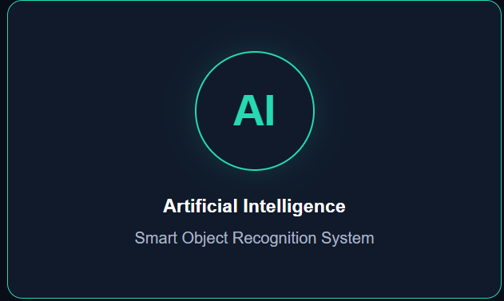

Discover the powerful technologies behind ObjectDetect AI. Combining Artificial Intelligence, Computer Vision and modern web development.
ObjectDetect AI uses advanced computer vision technology to identify and recognize objects through a live camera feed.
Our system combines the YOLOv8 deep learning model, OpenCV image processing and Python backend technology to deliver real-time object detection.

Every technology plays an important role in making our detection system work.
Python is the main programming language used to build the backend and execute object detection operations.
Backend ProgrammingYOLOv8 is the deep learning model used to identify objects and generate detection bounding boxes.
AI Object DetectionOpenCV captures webcam frames, processes images and draws detection boxes around recognized objects.
Computer VisionFlask connects the Python detection system with the website and streams live camera frames to the browser.
Python Web FrameworkHTML creates the website structure, including the navigation bar, camera display and content sections.
Web StructureCSS styles the website with a modern interface, responsive layouts, colors and visual effects.
Web DesigningA simple process that connects the camera with artificial intelligence.
OpenCV captures live video frames from the webcam.
YOLOv8 analyzes each frame and recognizes objects.
OpenCV draws bounding boxes and object labels.
Flask streams processed frames to the website.
Explore real-time object detection using our intelligent camera detection system.
Try Live Detection